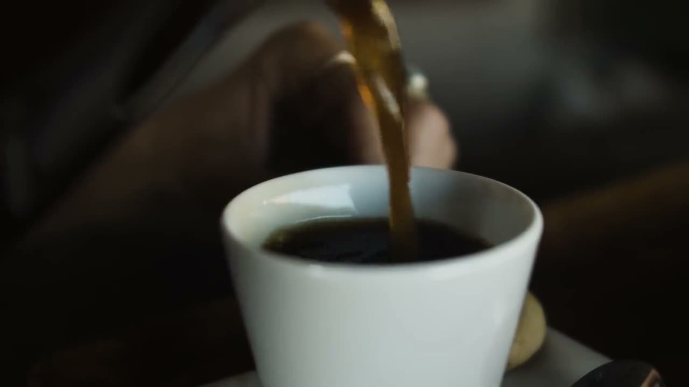
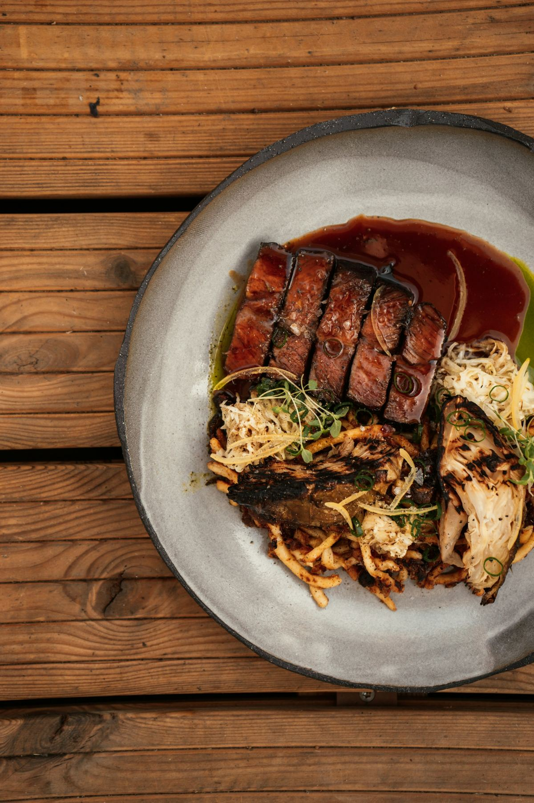
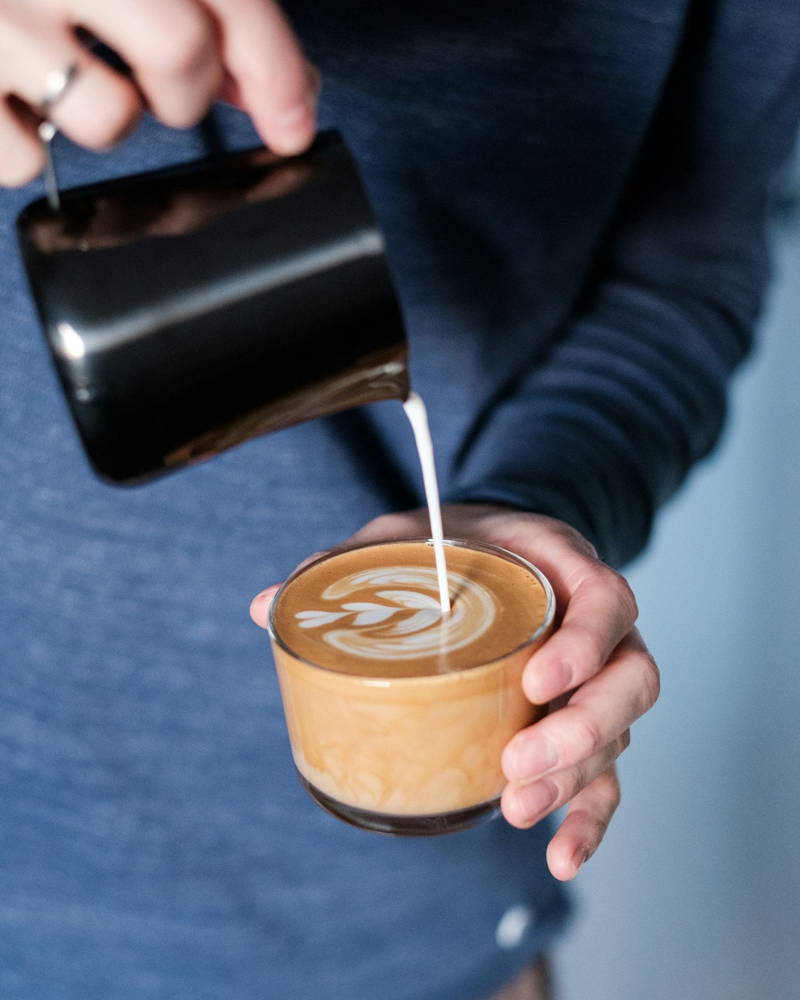

I dag07–22
Lunch11.30–14.30
AdressExempelgatan 5, Staden


Om oss
Ett ställe att stanna kvar på
Café Kanel är kvarterets vardagsrum. Vi bakar själva, köper råvaror från lokala leverantörer och lagar mat som smakar säsong.
Titta in för en snabb kopp kaffe eller slå dig ner med vänner hela eftermiddagen.
Meny
Enkelt, gott och hemlagat
Frukost & fika
Kanelbulle45 kr
Bakad här varje morgon
Surdegsmacka med avokado115 kr
Löskokt ägg, citron och chili
Yoghurt med granola95 kr
Hemgjord granola och färska bär
Lunch & middag
Dagens lunch145 kr
Sallad, bröd och kaffe ingår
Grillad entrecôte325 kr
Grön sparris och rödvinssås
Säsongens gröna rätt195 kr
Fråga oss om dagens val
Dryck
Cappuccino45 kr
Espresso från lokalt rosteri
Latte med havremjölk52 kr
Även med kanel och honung
Glas vinfrån 95 kr
Rött, vitt och mousserande
Exempelmeny – en riktig restaurang lägger in sin egen meny och sina egna priser här.
Från köket




De bästa samtalen börjar över en kopp kaffe
Hitta hit
Välkommen in
Exempelgatan 5, 123 45 Staden · Nära torget
| Måndag–fredag | 07–22 |
| Lördag | 09–23 |
| Söndag | 09–18 |
Boka ett bord
Välj dag, tid och antal personer. Här kopplas restaurangens eget bokningssystem in.
Boka bord
Telefon: 000-000 00 00 (exempel)
E-post: hej@cafekanel.exempel